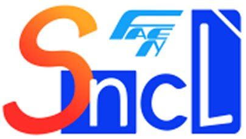

Les scrutins
Le Conseil Supérieur d'Administration (CSA) du Ministère de l'Enseignement supérieur, de la Recherche et de l'Innovation |
Le Conseil Supérieur d'Administration (CSA) du Ministère de l'Education nationale |
Les Conseils Supérieurs d'Administration Académiques (CSAA) du Ministère de l'Education nationale |
La Commission Administrative Paritaire Nationale (CAPN) du Ministère de l'Education nationale |
Les Commissions Administratives Paritaires Académiques (CAPA) du Ministère de l'Education nationale |
Electeurs: Enseignants-chercheurs, PRAG, PRCE, Contractuels du supérieur, ITRF. Notre profession de foi Notre liste de candidats |
Electeurs: Professeurs du second degré, professeurs de l'ENSAM, CPE, Psy-EN. Notre profession de foi Notre liste de candidats |
Electeurs: Professeurs du second degré, professeurs de l'ENSAM, CPE, Psy-EN. Notre profession de foi Notre liste de candidats: |
Electeurs: Professeurs du second degré, professeurs de l'ENSAM, CPE, Psy-EN. Notre profession de foi Notre liste de candidats |
Electeurs: Professeurs du second degré, professeurs de l'ENSAM, CPE, Psy-EN. Notre profession de foi Notre liste de candidats: |
Nos autres documents électroraux
Nos deux courriels aux électeurs du CSA de l'ESR:
Aucun PRAG ou PRCE ou contractuel en position éligible sur les listes toutes les organisations syndicales sauf sur celle du SAGES-SNCL:
Modalités des scrutins
L'ensemble des scrutins se déroule par voie électronique du jeudi 1er au jeudi 8 décembre 2022.
L'accès au portail élections s'effectue sur ce lien direct
à partir du 13 octobre 2022. Pour se connecter, il suffit de donner l'identifiant envoyé sur la boîte courriel académique ou profesionnelle de chaque électeur
puis de définir un mot de passe.
Le choix d'une question personnelle est proposé en cas d'oubli du mot de passe.
Dans l'espace électeur, on peut:
- Consulter son profil électeur
- Consulter les scrutins pour lesquels on est électeur
- Vérifier son inscription aux scrutins correspondant à son corps d'appartenance, sa position administrative, son affectation et réclamer en ligne
- Modifier son mot de passe élection
A partir du 13 octobre, on peut consulter les listes électorales et les professions de foi pour chacun des scrutins.
La notice de vote est remise à chaque électeur sur son lieu de travail contre émargement ou à son adresse postale.
Cette notice contient le code de vote. En cas de perte, un nouveau code peut être demandé sur le portail élections jusqu'au 8 décembre avant 17h, heure de Paris.
Le vote s'effectue sur le portail à l'aide de son identifiant électeur, son mot de passe élections et son code de vote du jeudi 1er décembre 2022 à
8h jusqu'au jeudi 8 décembre 2022 à 17h, heure de Paris.
Le vote est possible depuis n'importe quel ordinateur, tablette ou téléphone mobile connecté à internet dans le lieu de son choix.
Des espaces ou kiosques électoraux seront mis à disposition des électeurs sur les lieux de travail du 1er au 8 décembre 2022.
Nos conseils pratiques
Activez dès maintenant votre espace électeur, notez et conservez votre mot de passe élections ainsi que la réponse à la question personnelle.
Ne votez pas les trois premiers jours de l'ouverture des scrutins. Des dysfonctionnements informatiques apparaissent souvent au début
des opérations de vote.
N'attendez pas le dernier jour du scrutin pour voter. La saturation des réseaux de communication peut fortement ralentir le processus de vote
ou le rendre impossible.
Consulter notre fiche pratique du vote électronique
Pour en savoir plus sur ces élections, voir la page spécifique du Ministère de l'Education nationale
Nos média catégoriels
PRAG et PRCE


Contractuels du Supérieur